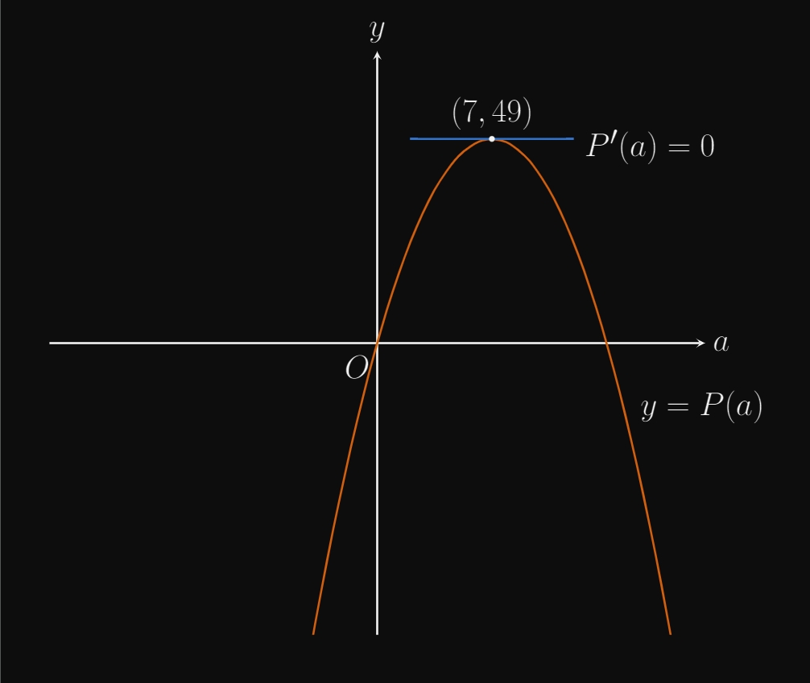
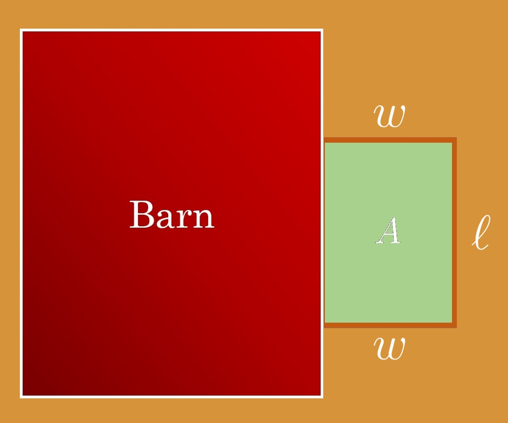

3.8 — Optimization
Optimization is a mathematical procedure that applies absolute extrema, which we covered in section 3.4, to real-world problems. The scope of optimization in calculus includes problems such as maximizing fence area, minimizing surface area, inscribing shapes, and minimizing distance. Let us do an example to illustrate the procedure.
Suppose that a farmer has \(40\) feet of fence to build a pen for her animals. She uses the side of her barn as one side of the pen. The farmer wants to find the dimensions that maximize the area of the pen; how should she do so? To answer this question let's draw a picture to represent the problem. Your picture of course does not need to be perfect; just a simple sketch will suffice. For this problem let \(x\) denote the width of the pen, and let \(y\) denote the length of the pen. 
A farmer has \(40\) feet of fence and must build a pen for her pumpkin farm. She uses the side of her barn as one side of the pen. What dimensions should she make the pen to maximize its area?
For optimization problems it's always a good idea to make a quick sketch. Your picture of course doesn't need to be perfect; just a simple model will do. For this problem let \(x\) denote the width of the barn and let \(y\) denote the length.
Now let's construct a system of equations. Let \(A\) denote the area of the barn. We know that $$ 2x + y = 40 $$ $$ A = xy. $$ From the first equation, we see that \(y = 40 - 2x\) and can thus plug it into the expression for \(A\): $$ A = xy = x(40 - 2x) = 40x - 2x^2. $$ We now have a function of \(A\) composed solely of \(x\), so we can take its derivative to find its critical numbers: $$ \frac{dA}{dx} = 40 - 4x = 0 \Rightarrow x = 10. $$ We know that \(0 \leq x \leq 20 \), so we need to find the absolute maximum of \(A\) for all \(x\) in that interval. We know that the maximum will either lie at the endpoints of the interval or at its critical points. The maximum can't be at the endpoints, because if you plug \(x = 0\) or \(x = 40\) into \(A\), you will get an area of \(0\). This leaves us with \(x = 10\), the point of the absolute maximum.
\(x = 10\) and \(y = 20\), so we can say that a 20 by 10 pen will produce the maximum area, which is \(200 \, \text{ft}^2\) in this case.
With optimization problems you should always draw a sketch, and generally the procedure is to arrange a system of equations
In an \(xy\)-axis, there lies the parabola \(f(x) = 9 - x^2\) for \(f(x) \geq 0 \). A rectangle is to be inscribed in the parabola. What are the dimensions that will produce the maximum area of the rectangle?
Let's draw a picture for this problem.
The expression for the inscribed rectangle's area is given by $$ A(x) = 2xf(x) = 2x(9 - x^2) = 18x - 2x^3. $$ Now we'll find the maximum value of \(A\) for \(x \in [0,3] \); notice that we consider this domain because \(A(x) < 0 \) outside of this interval. When \(x = 0\) or when \(x = 3\), \(A(x) = 0 \), so we know that the absolute maximum of \(A(x)\) cannot lie at the endpoints. We now consider the critical numbers by finding setting \(A'(x)\) equal to \(0\): $$ A'(x) = 18 - 6x^2 = 0 $$ $$ x = \sqrt{3}. $$
\(x = \sqrt{3}\) and \(f(\sqrt{3})\ = 6\), so a rectangle of length \(2\sqrt{3}\) by \(6\) will produce the maximum area of the inscribed rectangle, which is \(12\sqrt{3}\) in this case.